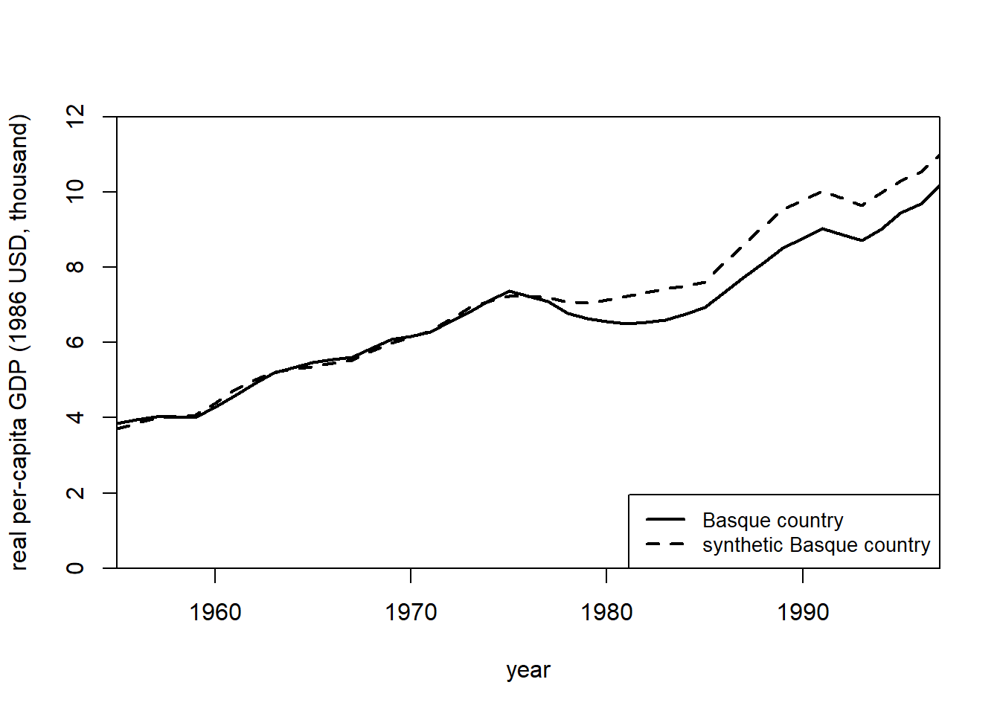

21.3 Synthetic Control
Examples in marketing:
- (Tirunillai and Tellis 2017): offline TV ad on Online Chatter
Synthetic control method (SCM) is a generalization of the Difference-In-Differences model
SCMs can also be used under the Bayesian framework where we do not have to impose any restrictive priori (S. Kim, Lee, and Gupta 2020)
Advantages over Difference-In-Differences
- Maximization of the observable similarity between control and treatment (maybe also unobservables)
- Can also be used in cases where no untreated case with similar on matching dimensions with treated cases
- Objective selection of controls.
A data driven procedure to construct more comparable control groups (i.e., black box).
To do causal inference with control and treatment group using Matching Methods, you typically have to have similar covariates in the control and the treated groups. However, if you don’t methods like Propensity Scores and DID can perform rather poorly (i.e., large bias).
SCM is recommended when
- Social events to evaluate large-scale program or policy
- Only one treated case with several control candidates.
Advantages:
- From the selection criteria, researchers can understand the relative importance of each candidate
- Post-intervention outcomes are not used in synthetic. Hence, you can’t retro-fit.
- Observable similarity between control and treatment cases is maximized
Assumptions
Donor subject is a good match for the synthetic control (i.e., gap between the dependent of the donor subject and that of the synthetic control should be 0 before treatment)
Only the treated subject undergoes the treatment and not any of the subjects in the donor pool.
No other changes to the subjects during the whole window.
Synth provides an algorithm that finds weighted combination of the comparison units where the weights are chosen such that it best resembles the values of predictors of the outcome variable for the affected units before the intervention.
21.3.1 Example 1
# install.packages("Synth")
# install.packages("gsynth")
library("Synth")
library("gsynth")simulate data for 10 states and 30 years. State A receives the treatment T = 20 after year 15.
set.seed(1)
year <- rep(1:30, 10)
state <- rep(LETTERS[1:10], each = 30)
X1 <- round(rnorm(300, mean = 2, sd = 1), 2)
X2 <- round(rbinom(300, 1, 0.5) + rnorm(300), 2)
Y <- round(1 + 2 * X1 + rnorm(300), 2)
df <- as.data.frame(cbind(Y, X1, X2, state, year))
df$Y <- as.numeric(as.character(df$Y))
df$X1 <- as.numeric(as.character(df$X1))
df$X2 <- as.numeric(as.character(df$X2))
df$year <- as.numeric(as.character(df$year))
df$state.num <- rep(1:10, each = 30)
df$state <- as.character(df$state)
df$`T` <- ifelse(df$state == "A" & df$year >= 15, 1, 0)
df$Y <- ifelse(df$state == "A" & df$year >= 15, df$Y + 20, df$Y)str(df)
#> 'data.frame': 300 obs. of 7 variables:
#> $ Y : num 2.29 4.51 2.07 8.87 4.37 1.32 8 7.49 6.98 3.72 ...
#> $ X1 : num 1.37 2.18 1.16 3.6 2.33 1.18 2.49 2.74 2.58 1.69 ...
#> $ X2 : num 1.96 0.4 -0.75 -0.56 -0.45 1.06 0.51 -2.1 0 0.54 ...
#> $ state : chr "A" "A" "A" "A" ...
#> $ year : num 1 2 3 4 5 6 7 8 9 10 ...
#> $ state.num: int 1 1 1 1 1 1 1 1 1 1 ...
#> $ T : num 0 0 0 0 0 0 0 0 0 0 ...dataprep.out <-
dataprep(
df,
predictors = c("X1", "X2"),
dependent = "Y",
unit.variable = "state.num",
time.variable = "year",
unit.names.variable = "state",
treatment.identifier = 1,
controls.identifier = c(2:10),
time.predictors.prior = c(1:14),
time.optimize.ssr = c(1:14),
time.plot = c(1:30)
)
synth.out <- synth(dataprep.out)
#>
#> X1, X0, Z1, Z0 all come directly from dataprep object.
#>
#>
#> ****************
#> searching for synthetic control unit
#>
#>
#> ****************
#> ****************
#> ****************
#>
#> MSPE (LOSS V): 9.831789
#>
#> solution.v:
#> 0.3888387 0.6111613
#>
#> solution.w:
#> 0.1115941 0.1832781 0.1027237 0.312091 0.06096758 0.03509706 0.05893735 0.05746256 0.07784853print(synth.tables <- synth.tab(
dataprep.res = dataprep.out,
synth.res = synth.out)
)
#> $tab.pred
#> Treated Synthetic Sample Mean
#> X1 2.028 2.028 2.017
#> X2 0.513 0.513 0.394
#>
#> $tab.v
#> v.weights
#> X1 0.389
#> X2 0.611
#>
#> $tab.w
#> w.weights unit.names unit.numbers
#> 2 0.112 B 2
#> 3 0.183 C 3
#> 4 0.103 D 4
#> 5 0.312 E 5
#> 6 0.061 F 6
#> 7 0.035 G 7
#> 8 0.059 H 8
#> 9 0.057 I 9
#> 10 0.078 J 10
#>
#> $tab.loss
#> Loss W Loss V
#> [1,] 9.761708e-12 9.831789path.plot(synth.res = synth.out,
dataprep.res = dataprep.out,
Ylab = c("Y"),
Xlab = c("Year"),
Legend = c("State A","Synthetic State A"),
Legend.position = c("topleft")
)
abline(v = 15,
lty = 2)
Gaps plot:
gaps.plot(synth.res = synth.out,
dataprep.res = dataprep.out,
Ylab = c("Gap"),
Xlab = c("Year"),
Ylim = c(-30, 30),
Main = ""
)
abline(v = 15,
lty = 2)
Alternatively, gsynth provides options to estimate iterative fixed effects, and handle multiple treated units at tat time.
Here, we use two=way fixed effects and bootstrapped standard errors
gsynth.out <- gsynth(
Y ~ `T` + X1 + X2,
data = df,
index = c("state", "year"),
force = "two-way",
CV = TRUE,
r = c(0, 5),
se = TRUE,
inference = "parametric",
nboots = 1000,
parallel = F # TRUE
)
#> Cross-validating ...
#> r = 0; sigma2 = 1.13533; IC = 0.95632; PC = 0.96713; MSPE = 1.65502
#> r = 1; sigma2 = 0.96885; IC = 1.54420; PC = 4.30644; MSPE = 1.33375
#> r = 2; sigma2 = 0.81855; IC = 2.08062; PC = 6.58556; MSPE = 1.27341*
#> r = 3; sigma2 = 0.71670; IC = 2.61125; PC = 8.35187; MSPE = 1.79319
#> r = 4; sigma2 = 0.62823; IC = 3.10156; PC = 9.59221; MSPE = 2.02301
#> r = 5; sigma2 = 0.55497; IC = 3.55814; PC = 10.48406; MSPE = 2.79596
#>
#> r* = 2
#>
#>
Simulating errors .............
Bootstrapping ...
#> ..........plot(gsynth.out)
plot(gsynth.out, type = "counterfactual")
plot(gsynth.out, type = "counterfactual", raw = "all") # shows estimations for the control cases
21.3.2 Example 2
by Leihua Ye
library(Synth)
data("basque")
dim(basque) #774*17
#> [1] 774 17
head(basque)
#> regionno regionname year gdpcap sec.agriculture sec.energy sec.industry
#> 1 1 Spain (Espana) 1955 2.354542 NA NA NA
#> 2 1 Spain (Espana) 1956 2.480149 NA NA NA
#> 3 1 Spain (Espana) 1957 2.603613 NA NA NA
#> 4 1 Spain (Espana) 1958 2.637104 NA NA NA
#> 5 1 Spain (Espana) 1959 2.669880 NA NA NA
#> 6 1 Spain (Espana) 1960 2.869966 NA NA NA
#> sec.construction sec.services.venta sec.services.nonventa school.illit
#> 1 NA NA NA NA
#> 2 NA NA NA NA
#> 3 NA NA NA NA
#> 4 NA NA NA NA
#> 5 NA NA NA NA
#> 6 NA NA NA NA
#> school.prim school.med school.high school.post.high popdens invest
#> 1 NA NA NA NA NA NA
#> 2 NA NA NA NA NA NA
#> 3 NA NA NA NA NA NA
#> 4 NA NA NA NA NA NA
#> 5 NA NA NA NA NA NA
#> 6 NA NA NA NA NA NAtransform data to be used in synth()
dataprep.out <- dataprep(
foo = basque,
predictors = c(
"school.illit",
"school.prim",
"school.med",
"school.high",
"school.post.high",
"invest"
),
predictors.op = "mean",
# the operator
time.predictors.prior = 1964:1969,
#the entire time frame from the #beginning to the end
special.predictors = list(
list("gdpcap", 1960:1969, "mean"),
list("sec.agriculture", seq(1961, 1969, 2), "mean"),
list("sec.energy", seq(1961, 1969, 2), "mean"),
list("sec.industry", seq(1961, 1969, 2), "mean"),
list("sec.construction", seq(1961, 1969, 2), "mean"),
list("sec.services.venta", seq(1961, 1969, 2), "mean"),
list("sec.services.nonventa", seq(1961, 1969, 2), "mean"),
list("popdens", 1969, "mean")
),
dependent = "gdpcap",
# dv
unit.variable = "regionno",
#identifying unit numbers
unit.names.variable = "regionname",
#identifying unit names
time.variable = "year",
#time-periods
treatment.identifier = 17,
#the treated case
controls.identifier = c(2:16, 18),
#the control cases; all others #except number 17
time.optimize.ssr = 1960:1969,
#the time-period over which to optimize
time.plot = 1955:1997
)#the entire time period before/after the treatmentwhere
X1 = the control case before the treatment
X0 = the control cases after the treatment
Z1: the treatment case before the treatment
Z0: the treatment case after the treatment
synth.out = synth(data.prep.obj = dataprep.out, method = "BFGS")
#>
#> X1, X0, Z1, Z0 all come directly from dataprep object.
#>
#>
#> ****************
#> searching for synthetic control unit
#>
#>
#> ****************
#> ****************
#> ****************
#>
#> MSPE (LOSS V): 0.008864606
#>
#> solution.v:
#> 0.02773094 1.194e-07 1.60609e-05 0.0007163836 1.486e-07 0.002423908 0.0587055 0.2651997 0.02851006 0.291276 0.007994382 0.004053188 0.009398579 0.303975
#>
#> solution.w:
#> 2.53e-08 4.63e-08 6.44e-08 2.81e-08 3.37e-08 4.844e-07 4.2e-08 4.69e-08 0.8508145 9.75e-08 3.2e-08 5.54e-08 0.1491843 4.86e-08 9.89e-08 1.162e-07Calculate the difference between the real basque region and the synthetic control
gaps = dataprep.out$Y1plot - (dataprep.out$Y0plot
%*% synth.out$solution.w)
gaps[1:3,1]
#> 1955 1956 1957
#> 0.15023473 0.09168035 0.03716475synth.tables = synth.tab(dataprep.res = dataprep.out,
synth.res = synth.out)
names(synth.tables)
#> [1] "tab.pred" "tab.v" "tab.w" "tab.loss"
synth.tables$tab.pred[1:13,]
#> Treated Synthetic Sample Mean
#> school.illit 39.888 256.337 170.786
#> school.prim 1031.742 2730.104 1127.186
#> school.med 90.359 223.340 76.260
#> school.high 25.728 63.437 24.235
#> school.post.high 13.480 36.153 13.478
#> invest 24.647 21.583 21.424
#> special.gdpcap.1960.1969 5.285 5.271 3.581
#> special.sec.agriculture.1961.1969 6.844 6.179 21.353
#> special.sec.energy.1961.1969 4.106 2.760 5.310
#> special.sec.industry.1961.1969 45.082 37.636 22.425
#> special.sec.construction.1961.1969 6.150 6.952 7.276
#> special.sec.services.venta.1961.1969 33.754 41.104 36.528
#> special.sec.services.nonventa.1961.1969 4.072 5.371 7.111Relative importance of each unit
synth.tables$tab.w[8:14, ]
#> w.weights unit.names unit.numbers
#> 9 0.000 Castilla-La Mancha 9
#> 10 0.851 Cataluna 10
#> 11 0.000 Comunidad Valenciana 11
#> 12 0.000 Extremadura 12
#> 13 0.000 Galicia 13
#> 14 0.149 Madrid (Comunidad De) 14
#> 15 0.000 Murcia (Region de) 15# plot the changes before and after the treatment
path.plot(
synth.res = synth.out,
dataprep.res = dataprep.out,
Ylab = "real per-capita gdp (1986 USD, thousand)",
Xlab = "year",
Ylim = c(0, 12),
Legend = c("Basque country",
"synthetic Basque country"),
Legend.position = "bottomright"
)
gaps.plot(
synth.res = synth.out,
dataprep.res = dataprep.out,
Ylab = "gap in real per - capita GDP (1986 USD, thousand)",
Xlab = "year",
Ylim = c(-1.5, 1.5),
Main = NA
)
Doubly Robust Difference-in-Differences
Example from DRDID package
library(DRDID)
data(nsw_long)
# Form the Lalonde sample with CPS comparison group
eval_lalonde_cps <- subset(nsw_long, nsw_long$treated == 0 | nsw_long$sample == 2)Estimate Average Treatment Effect on Treated using Improved Locally Efficient Doubly Robust DID estimator
out <-
drdid(
yname = "re",
tname = "year",
idname = "id",
dname = "experimental",
xformla = ~ age + educ + black + married + nodegree + hisp + re74,
data = eval_lalonde_cps,
panel = TRUE
)
summary(out)
#> Call:
#> drdid(yname = "re", tname = "year", idname = "id", dname = "experimental",
#> xformla = ~age + educ + black + married + nodegree + hisp +
#> re74, data = eval_lalonde_cps, panel = TRUE)
#> ------------------------------------------------------------------
#> Further improved locally efficient DR DID estimator for the ATT:
#>
#> ATT Std. Error t value Pr(>|t|) [95% Conf. Interval]
#> -901.2703 393.6247 -2.2897 0.022 -1672.7747 -129.766
#> ------------------------------------------------------------------
#> Estimator based on panel data.
#> Outcome regression est. method: weighted least squares.
#> Propensity score est. method: inverse prob. tilting.
#> Analytical standard error.
#> ------------------------------------------------------------------
#> See Sant'Anna and Zhao (2020) for details.21.3.3 Example 3
by Synth package’s authors
library(Synth)
data("basque")synth() requires
\(X_1\) vector of treatment predictors
\(X_0\) matrix of same variables for control group
\(Z_1\) vector of outcome variable for treatment group
\(Z_0\) matrix of outcome variable for control group
use dataprep() to prepare data in the format that can be used throughout the Synth package
dataprep.out <- dataprep(
foo = basque,
predictors = c(
"school.illit",
"school.prim",
"school.med",
"school.high",
"school.post.high",
"invest"
),
predictors.op = "mean",
time.predictors.prior = 1964:1969,
special.predictors = list(
list("gdpcap", 1960:1969 , "mean"),
list("sec.agriculture", seq(1961, 1969, 2), "mean"),
list("sec.energy", seq(1961, 1969, 2), "mean"),
list("sec.industry", seq(1961, 1969, 2), "mean"),
list("sec.construction", seq(1961, 1969, 2), "mean"),
list("sec.services.venta", seq(1961, 1969, 2), "mean"),
list("sec.services.nonventa", seq(1961, 1969, 2), "mean"),
list("popdens", 1969, "mean")
),
dependent = "gdpcap",
unit.variable = "regionno",
unit.names.variable = "regionname",
time.variable = "year",
treatment.identifier = 17,
controls.identifier = c(2:16, 18),
time.optimize.ssr = 1960:1969,
time.plot = 1955:1997
)find optimal weights that identifies the synthetic control for the treatment group
synth.out <- synth(data.prep.obj = dataprep.out, method = "BFGS")
#>
#> X1, X0, Z1, Z0 all come directly from dataprep object.
#>
#>
#> ****************
#> searching for synthetic control unit
#>
#>
#> ****************
#> ****************
#> ****************
#>
#> MSPE (LOSS V): 0.008864606
#>
#> solution.v:
#> 0.02773094 1.194e-07 1.60609e-05 0.0007163836 1.486e-07 0.002423908 0.0587055 0.2651997 0.02851006 0.291276 0.007994382 0.004053188 0.009398579 0.303975
#>
#> solution.w:
#> 2.53e-08 4.63e-08 6.44e-08 2.81e-08 3.37e-08 4.844e-07 4.2e-08 4.69e-08 0.8508145 9.75e-08 3.2e-08 5.54e-08 0.1491843 4.86e-08 9.89e-08 1.162e-07gaps <- dataprep.out$Y1plot - (dataprep.out$Y0plot %*% synth.out$solution.w)
gaps[1:3, 1]
#> 1955 1956 1957
#> 0.15023473 0.09168035 0.03716475synth.tables <-
synth.tab(dataprep.res = dataprep.out, synth.res = synth.out)
names(synth.tables) # you can pick tables to see
#> [1] "tab.pred" "tab.v" "tab.w" "tab.loss"path.plot(
synth.res = synth.out,
dataprep.res = dataprep.out,
Ylab = "real per-capita GDP (1986 USD, thousand)",
Xlab = "year",
Ylim = c(0, 12),
Legend = c("Basque country",
"synthetic Basque country"),
Legend.position = "bottomright"
)
gaps.plot(
synth.res = synth.out,
dataprep.res = dataprep.out,
Ylab = "gap in real per-capita GDP (1986 USD, thousand)",
Xlab = "year",
Ylim = c(-1.5, 1.5),
Main = NA
)
You could also run placebo tests
21.3.4 Example 4
by Michael Robbins and Steven Davenport who are authors of MicroSynth with the following improvements:
Standardization
use.survey = TRUEand permutation (perm = 250andjack = TRUE) for placebo testsOmnibus statistic (set to
omnibus.var) for multiple outcome variablesincorporate multiple follow-up periods
end.post
Notes:
Both predictors and outcome will be used to match units before intervention
Outcome variable has to be time-variant
Predictors are time-invariant
library(microsynth)
data("seattledmi")
cov.var <- c("TotalPop", "BLACK", "HISPANIC", "Males_1521", "HOUSEHOLDS",
"FAMILYHOUS", "FEMALE_HOU", "RENTER_HOU", "VACANT_HOU")
match.out <- c("i_felony", "i_misdemea", "i_drugs", "any_crime")sea1 <- microsynth(
seattledmi,
idvar = "ID",
timevar = "time",
intvar = "Intervention",
start.pre = 1,
end.pre = 12,
end.post = 16,
match.out = match.out, # outcome variable will be matched on exactly
match.covar = cov.var, # specify covariates will be matched on exactly
result.var = match.out, # used to report results
omnibus.var = match.out, # feature in the omnibus p-value
test = "lower",
n.cores = min(parallel::detectCores(), 2)
)
sea1
#> microsynth object
#>
#> Scope:
#> Units: Total: 9642 Treated: 39 Untreated: 9603
#> Study Period(s): Pre-period: 1 - 12 Post-period: 13 - 16
#> Constraints: Exact Match: 58 Minimized Distance: 0
#> Time-variant outcomes:
#> Exact Match: i_felony, i_misdemea, i_drugs, any_crime (4)
#> Minimized Distance: (0)
#> Time-invariant covariates:
#> Exact Match: TotalPop, BLACK, HISPANIC, Males_1521, HOUSEHOLDS, FAMILYHOUS, FEMALE_HOU, RENTER_HOU, VACANT_HOU (9)
#> Minimized Distance: (0)
#>
#> Results:
#> end.post = 16
#> Trt Con Pct.Chng Linear.pVal Linear.Lower Linear.Upper
#> i_felony 46 68.22 -32.6% 0.0109 -50.3% -8.4%
#> i_misdemea 45 71.80 -37.3% 0.0019 -52.8% -16.7%
#> i_drugs 20 23.76 -15.8% 0.2559 -46.4% 32.1%
#> any_crime 788 986.44 -20.1% 0.0146 -32.9% -4.9%
#> Omnibus -- -- -- 0.0006 -- --
summary(sea1)
#> Weight Balance Table:
#>
#> Targets Weighted.Control All.scaled
#> Intercept 39 39.000239 39.0000000
#> TotalPop 2994 2994.051921 2384.7476665
#> BLACK 173 173.000957 190.5224020
#> HISPANIC 149 149.002632 159.2682016
#> Males_1521 49 49.000000 97.3746111
#> HOUSEHOLDS 1968 1968.033976 1113.5588052
#> FAMILYHOUS 519 519.010767 475.1876167
#> FEMALE_HOU 101 101.000957 81.1549471
#> RENTER_HOU 1868 1868.020338 581.9340386
#> VACANT_HOU 160 160.011485 98.4222153
#> i_felony.12 14 14.000000 4.9023024
#> i_felony.11 11 11.000239 4.6313006
#> i_felony.10 9 9.000000 3.0740510
#> i_felony.9 5 5.000000 3.2641568
#> i_felony.8 20 20.000000 4.4331052
#> i_felony.7 8 8.000000 3.7616677
#> i_felony.6 13 13.000000 3.0012446
#> i_felony.5 20 20.000718 3.1549471
#> i_felony.4 10 10.000000 4.0245800
#> i_felony.3 7 7.000000 3.3693217
#> i_felony.2 13 13.000239 3.2803360
#> i_felony.1 12 12.000000 3.4380834
#> i_misdemea.12 15 15.000239 4.2470442
#> i_misdemea.11 12 12.000000 4.6070317
#> i_misdemea.10 12 12.000000 4.0771624
#> i_misdemea.9 14 14.000000 3.7414437
#> i_misdemea.8 12 12.000000 3.9679527
#> i_misdemea.7 20 20.000000 4.2551338
#> i_misdemea.6 16 16.000479 3.5594275
#> i_misdemea.5 24 24.000000 3.5634723
#> i_misdemea.4 21 21.000239 4.3360299
#> i_misdemea.3 21 21.000000 4.3845675
#> i_misdemea.2 14 14.000000 3.5351587
#> i_misdemea.1 16 16.000000 4.1540137
#> i_drugs.12 13 13.000000 1.6543248
#> i_drugs.11 8 8.000000 1.5127567
#> i_drugs.10 3 3.000000 1.3226509
#> i_drugs.9 4 4.000000 0.9788426
#> i_drugs.8 4 4.000000 1.1123211
#> i_drugs.7 10 10.000000 1.0516490
#> i_drugs.6 4 4.000000 1.2377100
#> i_drugs.5 2 2.000000 1.2296204
#> i_drugs.4 1 1.000000 1.1244555
#> i_drugs.3 5 5.000000 1.3550093
#> i_drugs.2 12 12.000000 1.1365899
#> i_drugs.1 8 8.000239 1.3590541
#> any_crime.12 272 272.001196 65.3397635
#> any_crime.11 227 227.001675 64.2395769
#> any_crime.10 183 183.000957 55.6929060
#> any_crime.9 176 176.000479 53.2377100
#> any_crime.8 228 228.000479 55.8142502
#> any_crime.7 246 246.002393 55.8061605
#> any_crime.6 200 200.000957 52.8291848
#> any_crime.5 270 270.001436 50.6530803
#> any_crime.4 250 250.000957 57.2946484
#> any_crime.3 236 236.000957 58.8680772
#> any_crime.2 250 250.001196 51.5429371
#> any_crime.1 242 242.000957 55.1144991
#>
#> Results:
#>
#> end.post = 16
#> Trt Con Pct.Chng Linear.pVal Linear.Lower Linear.Upper
#> i_felony 46 68.22 -32.6% 0.0109 -50.3% -8.4%
#> i_misdemea 45 71.80 -37.3% 0.0019 -52.8% -16.7%
#> i_drugs 20 23.76 -15.8% 0.2559 -46.4% 32.1%
#> any_crime 788 986.44 -20.1% 0.0146 -32.9% -4.9%
#> Omnibus -- -- -- 0.0006 -- --plot_microsynth(sea1)


sea2 <- microsynth(seattledmi,
idvar="ID", timevar="time", intvar="Intervention",
start.pre=1, end.pre=12, end.post=c(14, 16),
match.out=match.out, match.covar=cov.var,
result.var=match.out, omnibus.var=match.out,
test="lower",
perm=250, jack=TRUE,
n.cores = min(parallel::detectCores(), 2))